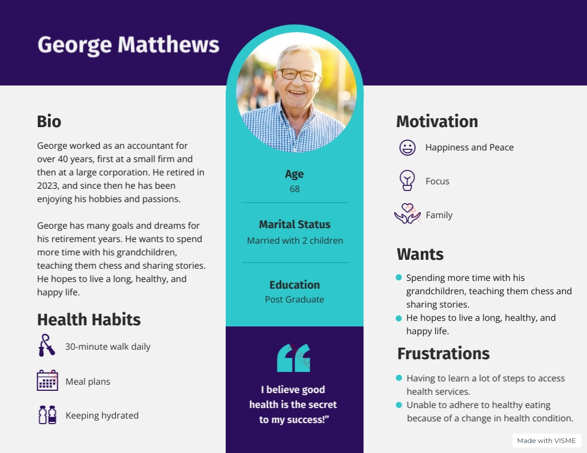
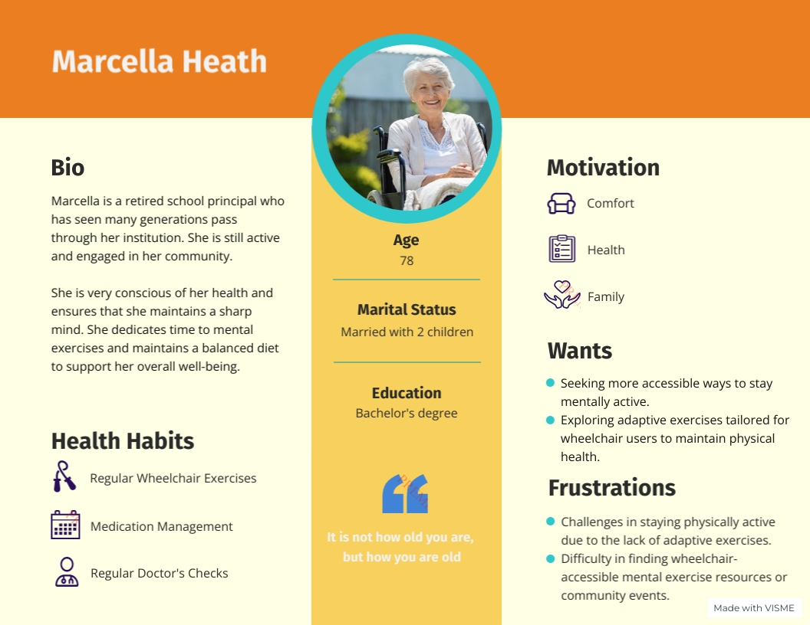

Personna Page
George is a recent retire who wants to enjoy the rest of his life pursuing hobbies and spending time with the family. His health is of paramount importance since he likes to go on a walk every day and travel the world. He needs to keep a healthy life to enjoy his activities
Marcella Heath, a 78-year-old former principal, is health conscious and active in her community. She regularly does wheelchair gymnastics and takes medication. Despite her comfort, health, and family motivations, she faces the challenge of finding adaptive resources for physical and mental exercise. Marcela is looking for more accessible ways to stay mentally active and physically healthy.
